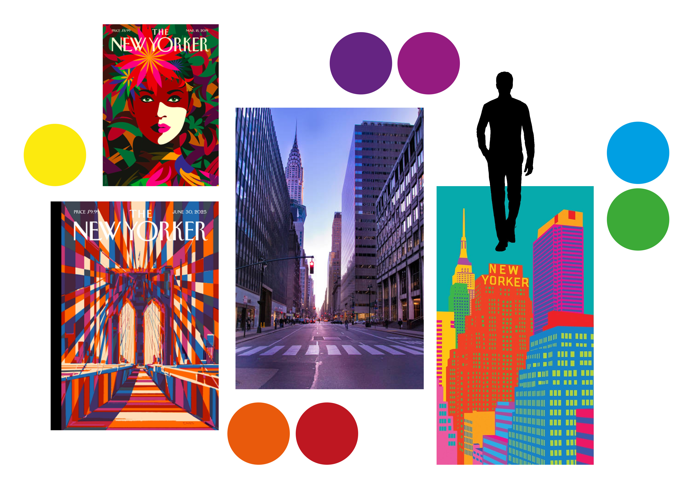
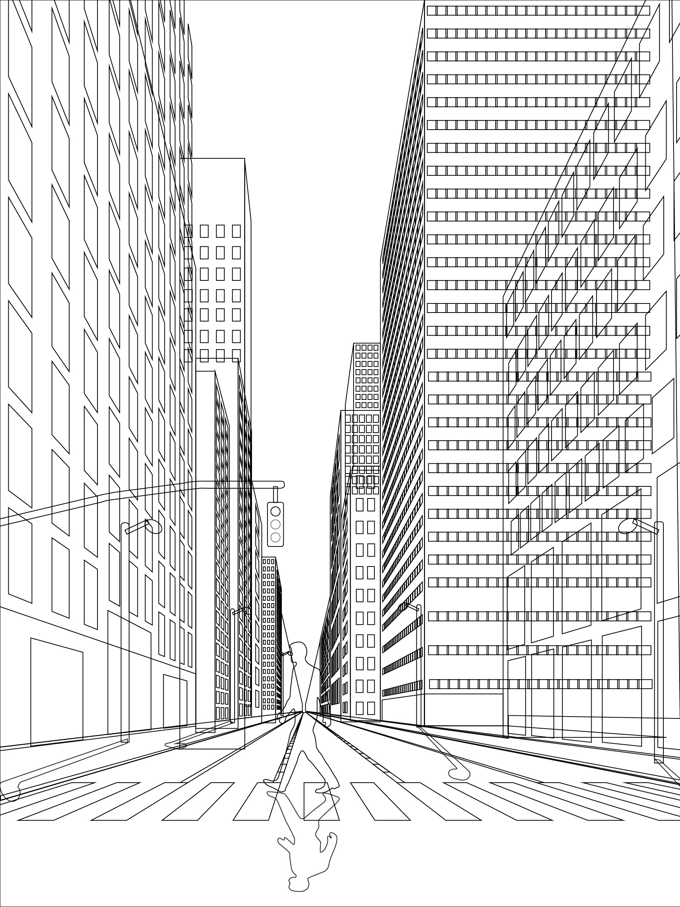

Le Brief
Réalisation d'une affiche pour The New Yorker
J’ai d'abord choisi la photo de référence puis je l'ai réalisé sur Illustrator. J'ai ensuite ajouté les couleurs et les ombres pour finaliser le projet.
Réalisation d'une affiche pour The New Yorker
J’ai d'abord choisi la photo de référence puis je l'ai réalisé sur Illustrator. J'ai ensuite ajouté les couleurs et les ombres pour finaliser le projet.
J'ai d'abord réalisé un moodboard pour m'inspirer et définir l'ambiance de l'affiche. J'ai choisi des images qui reflètent le style de The New Yorker et qui m'ont aidé à créer une composition harmonieuse.

J'ai ensuite réalisé l'esquisse de l'affiche sur Illustrator. J'ai travaillé sur la composition et les proportions pour obtenir un résultat final cohérent.

J'ai ensuite ajouté les couleurs et les ombres sur Illustrator pour finaliser l'affiche. J'ai travaillé sur les dégradés et les textures pour obtenir un rendu réaliste et fidèle au style de The New Yorker.